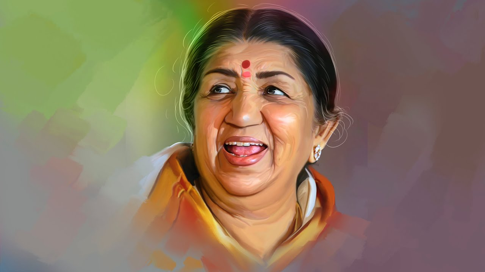

A melody of brilliance from 1929 to 2022.
In the vibrant city of Indore, on September 28, 1929, a star was born whose voice would become a beacon of musical brilliance. Lata Mangeshkar, the beloved daughter of Pandit Deenanath Mangeshkar and Shevanti Mangeshkar, emerged from a lineage steeped in music and devotion. Her early life was a harmonious blend of tradition and promise, nurtured by a family that celebrated the art of song.
From these modest beginnings, Lata’s path was illuminated by her unwavering passion and sheer talent. Her first recorded song, "Naachu Yaa Gade, Khelu Saari Mani Hausbha," in the Marathi film Kiti Hasaal (1942) was just the beginning. Despite the hurdles and rejections she faced, Lata's indomitable spirit shone through. The world began to take notice with her enchanting rendition of "Aayega Aanewala" in the 1949 film Mahal, signaling the arrival of a voice that would define an era.
Lata Mangeshkar’s voice wove a rich tapestry of melodies that became the soundtrack of countless lives. Her versatility knew no bounds, effortlessly transitioning between genres and languages. From the hauntingly beautiful "Lag Ja Gale" in Woh Kaun Thi to the epic romance of "Pyaar Kiya To Darna Kya" in Mughal-e-Azam, her songs were more than just music—they were profound expressions of emotion and artistry.
Her contributions extended beyond Bollywood, gracing regional films and devotional albums. Whether it was a poignant classical piece or a lively folk tune, Lata’s voice was a chameleon, adapting to the mood and essence of each song.
Lata Mangeshkar’s extraordinary contributions to music were recognized with numerous prestigious awards. The Bharat Ratna (2001), Padma Bhushan (1969), and Dadasaheb Phalke Award (1989) were among the many accolades celebrating her unparalleled artistry. These honors were not just acknowledgments of her talent but symbols of her enduring influence on Indian culture.
Lata Mangeshkar’s impact on the world of music goes beyond her discography. She was a mentor to many, a guiding light for aspiring artists, and a symbol of artistic excellence. Her music became a source of comfort, joy, and inspiration for millions, leaving an indelible mark on the cultural landscape.
Her philanthropic efforts further reflected her commitment to societal well-being, supporting education and health causes with the same dedication she applied to her music.
On February 6, 2022, the world said goodbye to a legendary voice that had been a constant companion in the lives of so many. Lata Mangeshkar’s passing marked the end of an illustrious chapter in music history, but her melodies continue to echo through the ages. Her state funeral was a poignant tribute to a life devoted to the art of song.
Lata Mangeshkar was born on September 28, 1929, in Indore, Madhya Pradesh, into a musically rich family. Her father, Pandit Deenanath Mangeshkar, was a renowned Marathi singer and theater actor. Her early training in music began under the guidance of her father, setting the stage for her future success.
Her journey into the limelight began with the Marathi film Kiti Hasaal in 1942, where she first recorded a song. Despite initial struggles, Lata’s perseverance and talent soon became apparent. Her breakthrough came with "Aayega Aanewala" from Mahal (1949), heralding the start of a legendary career.
Lata Mangeshkar’s prolific career spanned over six decades, with an extensive repertoire of songs in multiple languages and genres. Her contributions to Bollywood are timeless, with unforgettable hits such as "Lag Ja Gale," "Pyaar Kiya To Darna Kya," and "Tere Bina Zindagi Se."
Lata Mangeshkar’s legacy is one of unparalleled musical genius and cultural impact. Her mentorship of young artists and her philanthropic work reflect a life of purpose and compassion.
Lata Mangeshkar remained a beloved figure in the music industry until her passing on February 6, 2022. Her music and spirit continue to inspire, resonating through the hearts of millions.
Lata Mangeshkar remained single throughout her life, dedicating herself to her music and charitable causes. Her personal interests were deeply intertwined with her passion for music, reflecting a life of dedication and grace.